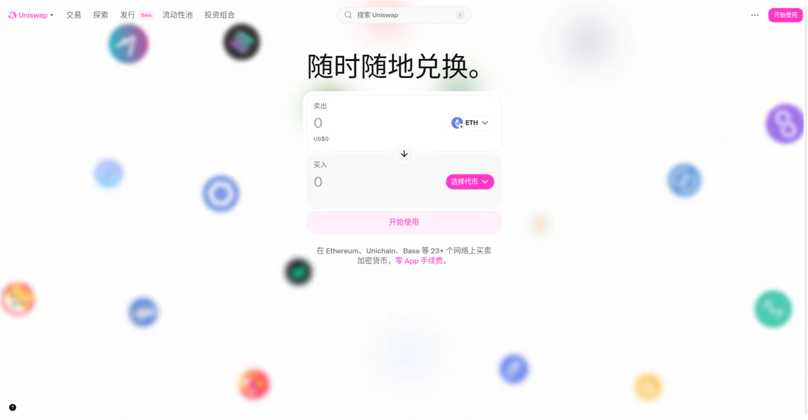
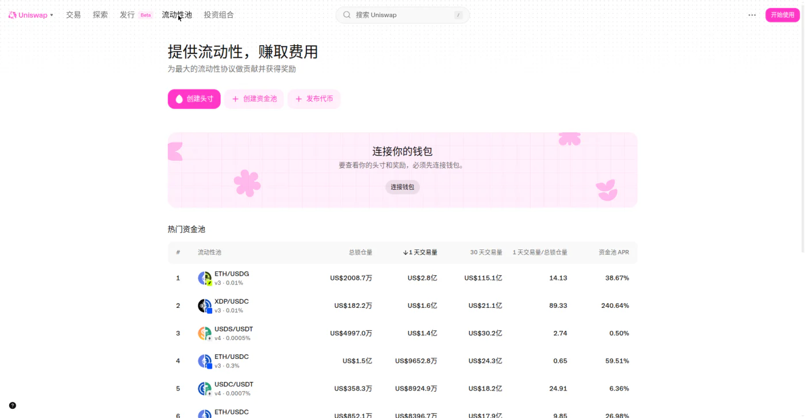
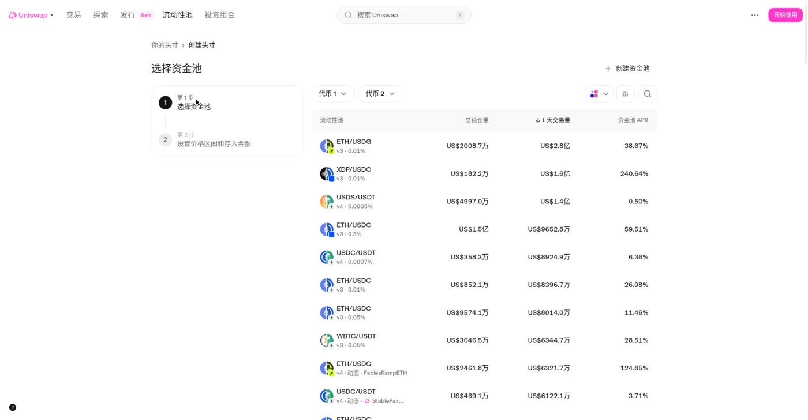
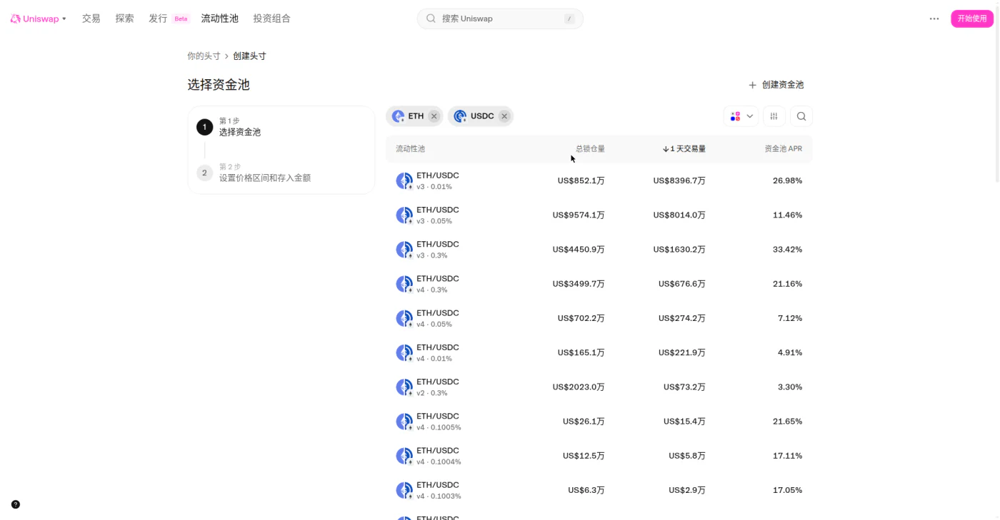
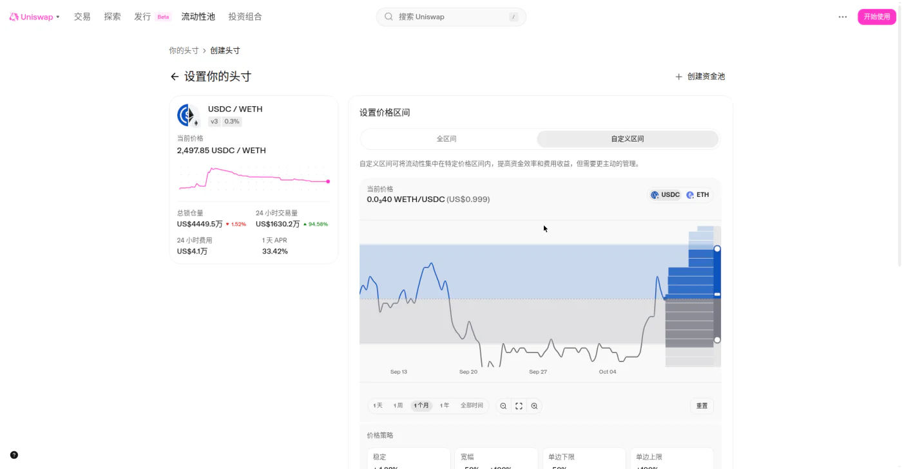
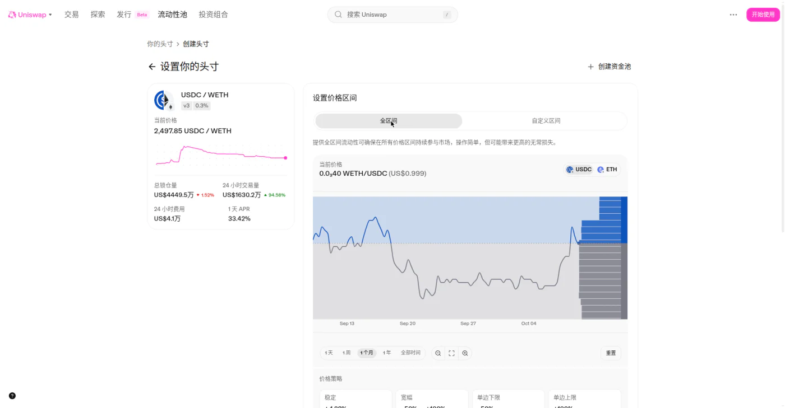
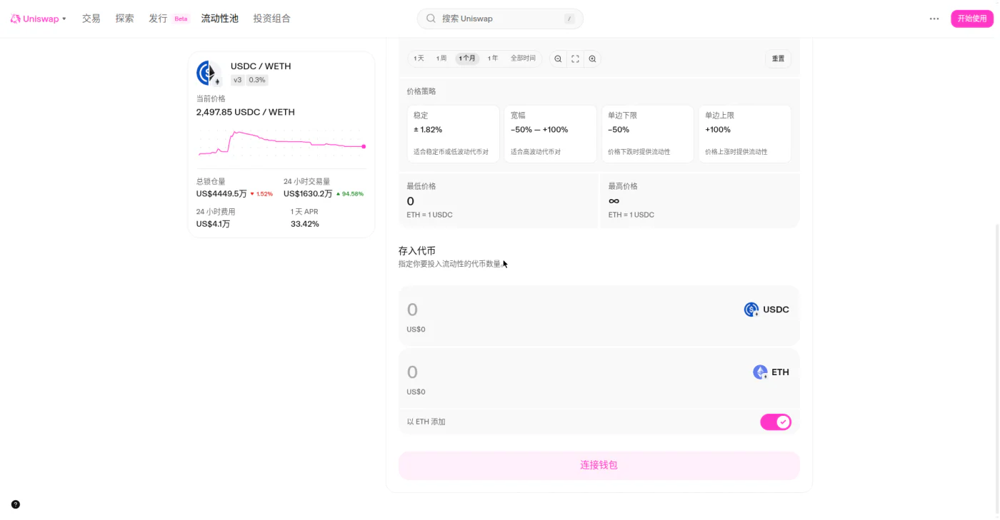
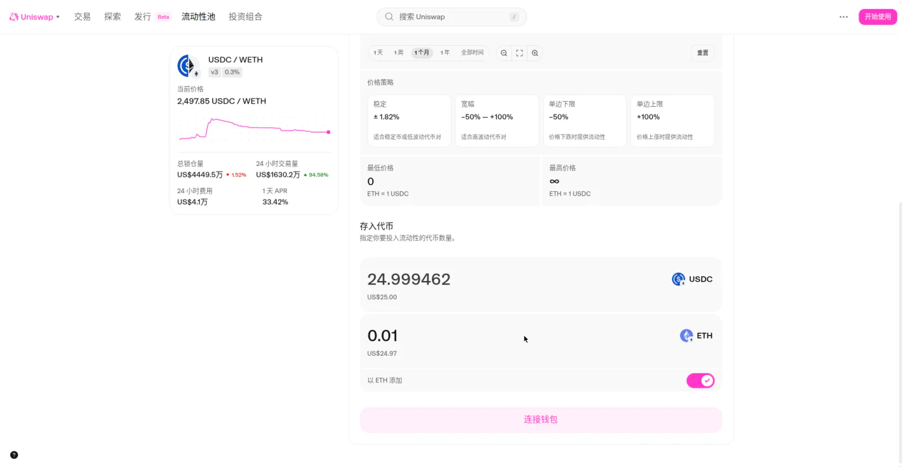

Uniswap 组 LP 新手教程
概述
本文介绍在 Uniswap 网页端创建流动性头寸（LP，即 Liquidity Provider，流动性提供者）的完整界面流程：进入流动性池页面、新建头寸、选择资金池与费率档位、设置价格区间、输入存入数量。
适用场景
- 长期持有两种代币（如 ETH + USDC），想赚取交易手续费分成
- 想在特定价格区间内提供流动性，提高资金效率
- 学习 DeFi 集中流动性（Concentrated Liquidity）机制
提示： 组 LP 不是"存钱生息"。收益来自交易手续费分成，同时承担无常损失、智能合约风险和 Gas 成本。本文仅为操作说明，不构成投资建议。
准备事项
开始前请确认以下条件：
- 一个以太坊兼容钱包（MetaMask / Rabby / Coinbase Wallet 等），已安装并备份好助记词
- 钱包中有两种代币（本文以 ETH + USDC 为例），以及少量 ETH 用于支付 Gas
- 桌面浏览器 + 稳定网络
- 只认准官网 app.uniswap.org，谨防钓鱼网站；任何索要助记词的页面都是骗局
核心概念速览
| 概念 | 一句话说明 |
|---|---|
| 资金池（Pool） | 两种代币组成的交易资金池，交易者在其中兑换 |
| 费率档位（Fee Tier） | 每笔交易抽取的手续费比例，如 0.3% |
| 价格区间（Price Range） | 你的资金在哪个价格范围内参与做市（v3/v4 的集中流动性） |
| 无常损失（Impermanent Loss） | 价格偏离存入时价格，撤出价值低于单纯持有的差额 |
| APR | 年化收益率（截图为演示时点的快照，不代表未来收益） |
一、进入流动性池页面
步骤 1：打开官网，点击"流动性池"
访问 Uniswap 应用，顶部导航栏点击 流动性池（英文界面为 Pools）。

步骤 2：浏览资金池列表
页面标题为 "提供流动性，赚取费用"，副标题"为最大的流动性协议做贡献并获得奖励"。下方有"创建头寸 / 创建资金池 / 发布代币"按钮，以及"热门资金池"表格（含总锁仓量、1 天 / 30 天交易量、资金池 APR 等列）。

说明： 表格中的 APR 和交易量是实时数据。挑选资金池时重点看"交易量 / 锁仓量"比率——交易越活跃，手续费收入越高。
步骤 3：点击"创建头寸"
点击 创建头寸（New position）进入新建流程。未连接钱包时会弹出钱包选择窗口（WalletConnect / MetaMask / Coinbase Wallet / Binance Wallet 等选项），演示中直接关闭，未连接任何钱包。

注意： 本文演示全程未连接钱包。实际组 LP 时需要先连接钱包，并在钱包中确认后续每一笔交易。
二、选择资金池与费率档位
新建头寸分两步：1 选择资金池 / 2 设置价格区间和存入金额。
步骤 4：选择代币对
在"选择代币对"中选择两种代币，本文以 ETH / USDC 为例。
步骤 5：选择资金池版本与费率档位
同一代币对可能有多个资金池（v2 / v3 / v4，不同费率），各池的锁仓量、交易量、APR 都不同：

常见费率档位（v3）：
| 费率 | 适合场景 |
|---|---|
| 0.01% | 稳定币之间等极低波动对 |
| 0.05% | 主流币对 |
| 0.3% | 常见默认档 |
| 1% | 高波动 / 长尾代币 |
此外还有 v2·0.3%（经典全区间做市）和 v4 动态费率（随市场浮动）等选项。
注意： 费率高不等于收益高。收益 = 费率 × 交易量 × 你的份额占比，挑选时以页面显示的交易量和 APR 为准，且历史 APR 不代表未来收益。
演示截图时 ETH/USDC（v3·0.3%）池数据：当前价格 2,497.85 USDC/WETH；总锁仓量约 US$4449.5万；24 小时交易量约 US$1630.2万；24 小时费用约 US$4.1万；1 天 APR 33.42%（均为演示时点快照）。
三、设置价格区间
步骤 6：选择"全区间"或"自定义区间"
两个标签页：全区间 / 自定义区间（默认选中自定义区间）。
- 自定义区间：将流动性集中在特定价格区间内，提高资金效率和手续费收益，但需要更主动的管理。页面配有价格图表（可切换 1 天 / 1 周 / 1 月 / 1 年 / 全部时间）和最低 / 最高价格输入框。页面说明原文："自定义区间可将流动性集中在特定价格区间内，提高资金效率和费用收益，但需要更主动的管理。"
- 全区间：在所有价格参与做市，操作简单。页面明确提示："提供全区间流动性可确保在所有价格区间持续参与市场，操作简单，但可能带来更高的无常损失。"


价格策略快捷卡片（四选一快速设置）：
- 稳定 ±1.82%（适合稳定币或低波动代币对）
- 宽幅 −50% – +100%（适合高波动代币对）
- 单边下限 −50%（价格下跌时提供流动性）
- 单边上限 +100%（价格上涨时提供流动性）
注意： 这是新手最容易踩坑的一步。区间越窄，资金效率越高，但价格一旦跑出区间就停止赚取手续费，且无常损失更大。新手建议从全区间或宽幅开始，先跑通全流程。
四、输入存入数量
步骤 7：填写存入代币数量
在"存入代币"区输入任意一种代币的数量，另一种会按当前价格自动计算。例如输入 0.01 ETH（约 US$24.97），自动算出 24.999462 USDC（约 US$25.00）。


说明：
- "以 ETH 添加"开关默认开启；
- 页面显示的美元估值仅供参考，以链上实际成交为准；
- 此时页面底部按钮仍为 "连接钱包"——无钱包状态下流程到此为止，没有预览 / 确认页，这也是本次演示的安全边界。
五、连接钱包并确认（本文未执行）
连接钱包后，实际组 LP 的后续步骤通常为：
- 点击供应 / 添加，在钱包中授权（Approve）两种代币；
- 预览头寸（价格区间、数量、预估 Gas）；
- 在钱包中确认交易并支付 Gas，等待链上确认；
- 头寸出现在"你的头寸"列表中，开始累积手续费。
注意：
- 演示到此为止，未执行这一步，未创建任何真实头寸，未花费任何资金。
- 授权、存入、收取手续费、撤出，每一步都是独立的链上交易，都要付 Gas（以太坊主网可能较贵）。小额资金操作前请先估算 Gas 占比，避免"赚的手续费不够付 Gas"。
六、头寸管理（创建后）
| 操作 | 方法 |
|---|---|
| 查看头寸 | 流动性池页 → 你的头寸（需先连接钱包） |
| 收取手续费 | 进入头寸详情 → Collect fees（需付 Gas） |
| 增加 / 减少流动性 | 头寸详情 → Add / Remove |
| 完全撤出 | Remove → 选择 100% → 钱包确认 |
七、费用与收益说明
- 手续费收入：按你在池中的份额实时累积，可随时收取（每次收取付一次 Gas）。
- Gas 成本：授权、存入、收取、撤出各需一笔交易，主网拥堵时费用较高；也可以考虑 Arbitrum / Base 等 Layer 2 网络（Uniswap 均支持，Gas 便宜很多）。
- 无常损失：举个例子——存入时 ETH = 2,500 USDC，你存入 1 ETH + 2,500 USDC（价值 $5,000）。若 ETH 涨到 5,000 USDC，池子自动再平衡后你的份额约变为 0.707 ETH + 3,535 USDC（价值约 $7,071）；而单纯持有则是 1 ETH + 2,500 USDC = $7,500。差额约 $429（约 5.7%）就是无常损失，需要用手续费收入去覆盖。
提示： 震荡行情对 LP 友好（赚手续费、价格来回不大）；单边大涨或大跌对 LP 不利（无常损失放大，还可能跑出价格区间）。
八、常见问题
问：组 LP 一定赚钱吗？
答：不一定。手续费收入能覆盖"无常损失 + Gas 成本"才是净赚。建议先小额试水，跑通收取、撤出全流程再考虑加仓。
问：价格跑出我设的区间会怎样？
答：头寸变为"非活跃"状态，不再赚取手续费，但本金仍在，可随时撤出；价格回到区间内会自动重新激活。
问：v2 / v3 / v4 有什么区别？
答：v2 是经典全区间做市（x × y = k）；v3 引入集中流动性和多费率档位；v4 在 v3 基础上支持动态费率与 Hooks 扩展。新手从 v3 主流资金池开始即可。
问：为什么演示最后一步停在"连接钱包"？
答：因为全程未连接钱包。无钱包状态下只能浏览界面流程，无法进入预览 / 确认页，也无法创建真实头寸——这正是本次演示刻意保持的安全边界。
问：稳定币对（如 USDC/USDT）组 LP 风险小吗？
答：无常损失很小，但仍有脱钩风险与智能合约风险，且收益率通常较低。没有"无风险"的 LP。
问：最重要的安全事项是什么？
答：三条：1）只用 app.uniswap.org，检查域名，谨防钓鱼网站；2）绝不在任何网页输入助记词 / 私钥；3）连接钱包后仔细核对钱包弹窗中的交易内容再确认。
参考链接
官方链接
| 用途 | 链接 |
|---|---|
| Uniswap 应用（组 LP 入口） | https://app.uniswap.org |
提示： 官方文档与帮助中心可从应用内链接进入，请以应用内实际链接为准。